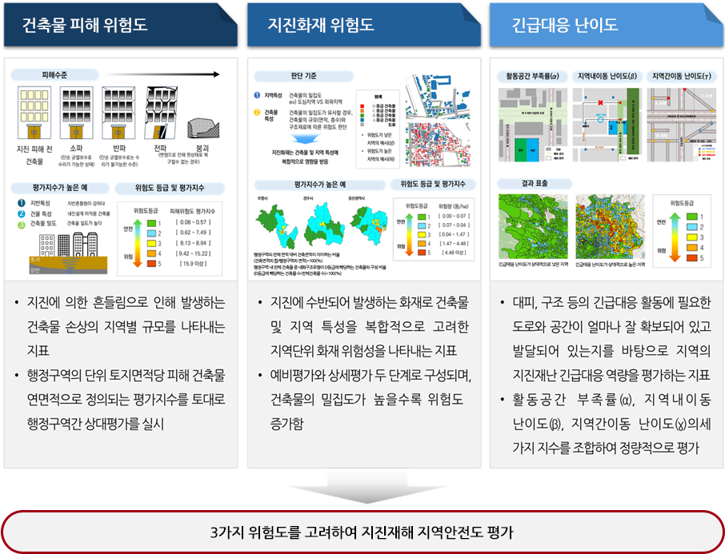
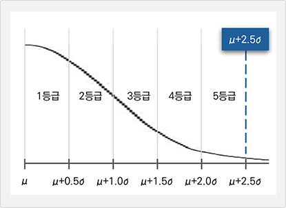
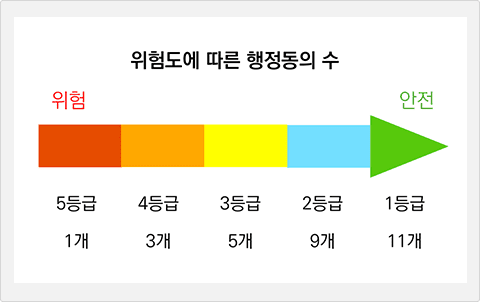

본 시스템은 2016년 경주지진과 2017년 포항지진 이후 국내 지진 발생 가능성과 위험성에 대한 사회적 관심이 증가하는 상황에서, 효율적이고 체계적인 지진방재 대응방안 수립을 목적으로 개발되었습니다. 지진으로 인한 피해규모는 지반의 특성, 노후 건축물의 분포 및 내진성능 수준, 2차 피해(지진화재 등)의 발생 가능성, 긴급 대응 환경 등에 따라 지역마다 큰 차이를 보이기 때문에, 획일적인 방재대책으로는 지역별 피해 저감에 한계가 있습니다. 따라서 본 평가 시스템은 각 지역의 고유한 지반특성, 건축물 붕괴위험성, 지진화재 위험도, 긴급대응의 난이도 등 주요한 지진취약요소들을 종합적으로 분석하여 지역 특성에 최적화된 ‘지진재해에 대한 지역안전도’를 정량적으로 제시하고자 개발되었습니다. 이를 통해 지진 발생 시 인명 및 재산피해의 효과적인 경감과 신속한 긴급 대응이 가능하도록 과학적이고 체계적인 기초자료를 제공하는 것이 본 시스템의 핵심 평가 목적입니다.
지진재해 지역위험도 평가 개요
지역안전도 평가를 위한 기반 자료 구축

지진재해 지역위험도에 사용되는 세부 위험도
본 연구에서는 대상 지역의 지진재해 지역안전도를 종합적으로 평가하기 위해 다음과 같은 3가지 세부 위험도를 고려하여 최종 종합위험도를 도출하였습니다. 이를 위해 지반공학적 전문 지식과 지역별 지반 특성을 분석하여 평가 대상 지역의 지반정보 자료를 구축하였으며, 건축물대장(세움터) 및 GIS 건물일반집합정보 등과 같이 공공 데이터와의 연계를 통해 지역안전도 평가에 필요한 기초 자료를 기본으로 개발되었습니다.
지진재해 지역위험도 평가기법과 절차 마련 위험도
지역안전도 등급 분류의 기준
지역위험도의 등급 분류는 상대평가 방식으로 진행하였으며, 평가결과의 통계적 분포를 고려하여 평균값에서 표준편차의 2.5배를 적용한 약 98.7%의 신뢰구간을 기준으로 총 5개 등급으로 구분하였습니다. 또한 평가 과정에서는 세부 위험도의 점수와 각각의 등급이 종합위험도에 미치는 영향을 반영하고자 하였으며, 이를 바탕으로 최종 산출된 종합위험도에 따라 등급을 재부여하였습니다. 최종적으로 평가결과를 순위로 제시함으로써 위험도가 높은 지역을 직관적으로 파악할 수 있도록 하였습니다.

[그림 3.4-1] 표준정규분포 기반 위험도 등급 구간

[그림 3.4-2] 피해위험도 등급 범례
지역 특성을 고려한 행정동별 지진재해 지진안전도의 활용 방법
지진재해로부터 안전한 도시를 조성하기 위해서는 지자체가 노후건축물 밀집지역을 우선 정비하고, 시민 개개인은 자가 건축물의 내진성능 점검 및 보강, 지진화재 예방을 위한 불연화 대책을 마련하는 것이 중요합니다. 지진에 대해 효과적이고 실효성 있는 방재 대책 수립을 지원하기 위해 담당 공무원과 지역 주민은 본 시스템에서 제공하는 지역안전도 평가 결과를 활용함으로써, 각 지역에 최적화된 맞춤형 방재 전략을 수립할 수 있을 것입니다.
지역 특성을 고려한 지진재해 지역안전도와 행정안전부 지진피해추정시스템과의 차이
행정안전부에서 운영하는 지진피해추정시스템은 지진 발생 직후 피해 규모를 신속히 파악하고 대응하기 위한 시스템입니다. 이 시스템은 진앙지의 위치 설정에 따라 피해 추정 결과가 달라질 수 있기 때문에, 지진대응 역량을 비교·평가하기 위해서는 진앙지의 위치 설정에 신중을 기해야 합니다. 반면, 본 연구에서 제시하는 지역특성을 고려한 지역안전도는 모든 지역에 동일한 조건의 지진이 기반암에서 발생한 것으로 가정한 후, 행정동 단위로 개별 지역의 특성(지반 특성, 건축물 현황, 긴급대응 여건 등)을 반영하여 지진안전도를 정량적으로 평가하는 시스템입니다. 이는 진앙지 설정과 무관하게 각 지역의 지진 취약성을 객관적으로 비교할 수 있어 지진 방재대책 수립에 더욱 효과적입니다.